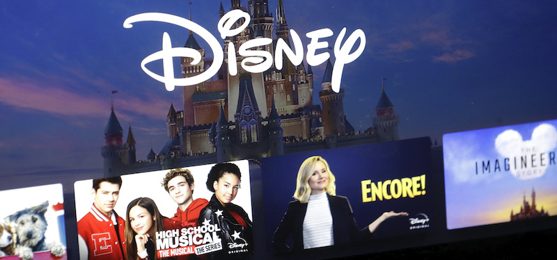
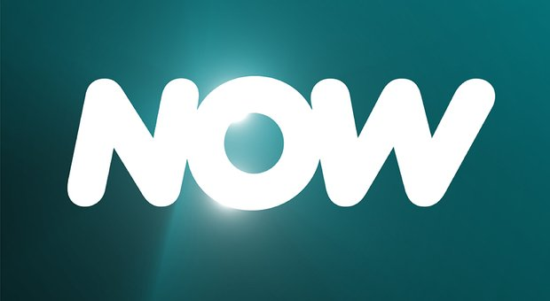
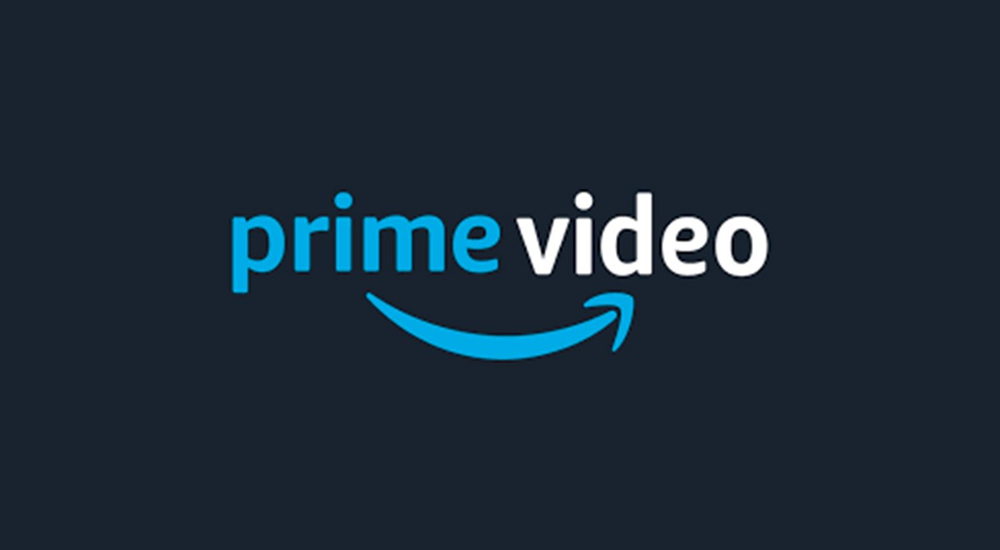

Come le app di streaming hanno cambiato il mondo dell'intrattenimento.
I servizi di streaming hanno rivoluzionato il modo di intendere televisione, apportando significativi cambiamenti nell'industria del cinema. In Italia si contano oltre 11 milioni di abbonati ad un'app di streaming con un trend in crescita di circa 6.5 milioni di utenti in solo un anno e mezzo. Infatti, seppur aiutati dall'apporto della pandemia, sembra essere lo streaming il nuovo padrone del mercato. In questo sito vedremo un focus sulle più importanti.
Disney+
Il marchio Disney+ in appena un anno di attività, è riuscita a ritagliarsi una fetta importante di mercato dell'industria cinematografica italiana e non solo. La casa di Topolino, infatti,in poco più di un anno ha distrutto tutte le aspettative di crescita previste alla nascita del servizio: si prevedevano circa 90 milioni di abbonati nei primi 4 anni di vita, mentre nel 2020, grazie anche al contributo della pandemia si sono avute oltre 100 milioni di sottoscrizioni effettuate
Un altro servizio di streaming capace di ritagliarsi la sua fetta di mercato italiano è Infinity. Il primo servizio streaming della Mediaset nasce nel 2013 e vedeva una stretta collaborazione tra i contenuti distribuiti dai canali Mediaset Premium ed il catalogo online Infinity. Seppur sia stato uno dei primi servizi streaming a credere in un'inversione di tendenza nel concetto di intrattenimento, la piattaforma non ha mai avuto una crescita esponenziale, bensì ha seguito un trend costante che la porta ad essere la quarta forza del mercato.

Netflix
Here we are, Netflix. Signore e signori ecco la regina indiscussa dei servizi streaming, diventata un vero e proprio fenomeno sociale e culturale. La vera rivoluzione compiuta dalla società che nei primi anni 2000 venne sbeffeggiata dal colosso Blockbuster. Una crescita lunga ed inesorabile che, al momento, la porta ad avere oltre 200 milioni di iscritti alla piattaforma. Che dire? Una società che agli albori aveva oltre 50 milioni di debiti che è riuscita a rifondare il concetto di intrattenimento, mandando definitivamente in pensione lettori dvd in funzione di contenuti on-demand.CHAPEAU!

Now
Un rebranding soddisfacente? L'applicazione (fino a qualche giorno fa Now Tv) è una figlia diretta di Sky. Essa infatti ha i diritti per poter trasmettere tutti i contenuti di proprietà della società di Rupert Murdock. A differenza della maggior parte di app di streaming, implementa al suo interno anche dei canali in diretta ed ha anche la possibilità di trasmettere eventi sportivi del nostro paese e non solo. Essa punta quindi ad un target leggermente diverso dalle altre app. Che sia una sorta di esperimento, affinchè Sky possa nel breve andare tutta su internet?

Il colosso di Jeff Bezos segue sempre di più la politica di espansione trasversale e si butta sullo streaming. Un servizio innovativo, che viene associato al servizio di Amazon Prime ha l'obiettivo di acquisire i clienti sfruttando prezzi bassi, contenuti innovativi e sconti dedicati come ad esempio lo sconto per gli universitari. Ascesa rapida per il servizio offerto da Amazon che al momento in Italia si assesta al secondo posto per quanto riguarda il numero di iscritti.
